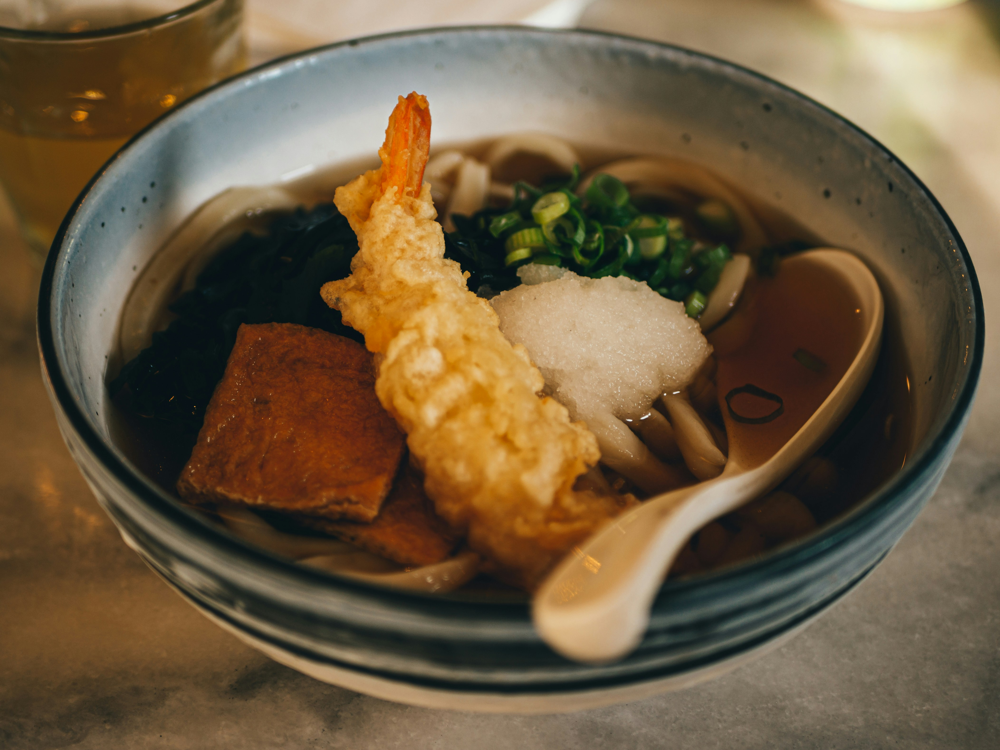

Udon

Description
"Embark on a culinary adventure inspired by the indomitable spirit of Tanjiro Kamado from Demon Slayer with our Tanjiro Udon recipe. This hearty and comforting bowl of udon noodles pays homage to the anime's protagonist, combining traditional Japanese flavors with a modern twist."
Ingredients
- 300g Udon noodles
- 4 eggs
- 500 ml dashi
- 1 tbsp soy sauce
- 1 tbsp mirin
- 1/2 tbsp sugar
- 1/4 tbsp salt
Instructions
- Boil 1 liter of water.
- When the water comes to a boil, turn the heat off and add 3/4 cup of cold water, then gently add the eggs.
- Cover your pot for 15-20 minutes (17 is generally the sweet spot) and then submerge the eggs in a bowl of cold water for 5-10 minutes.
- Add dashi to a frying pan and bring it to boil.
- Season with soy sauce, mirin, sugar, and salt. Set aside once seasoning is adjusted properly.
- Put the cooked udon noodles into bowls.
- Pour the broth over your udon noodles.
- Crack an onsen tamago over the udon and sprinkle on green onion.
back to previous page